Systems & operations
Pinterest content operations system
This page documents Pinterest content execution across multiple accounts and niches, including task tracking, asset management, output documentation, growth results, and selected published work.
Execution highlights
Scale, without losing accuracy
100+ accounts managed
High-volume Pinterest publishing across multiple niches with consistent formatting, scheduling, and output control
Multiple niches simultaneously
Executed within structured client content calendars while maintaining accuracy across accounts
Up to 165 pins / week
Sustained publishing volume built on repeatable production formats and disciplined scheduling cycles
Execution-focused role
Responsible for production tracking, asset coordination, scheduling visibility, and deadline consistency
Workflow infrastructure
Task tracking
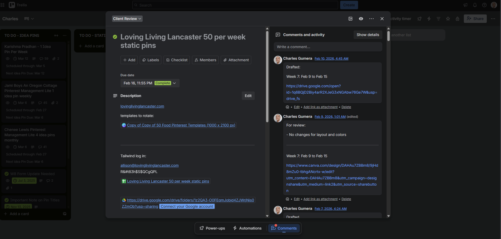
Tools & process
- Trello board per client brand
- Pin titles logged per card
- Due dates, scheduling coverage, and next content deadlines tracked
- Revision and communication centralized within card
Asset management
No cross-account confusion, at scale
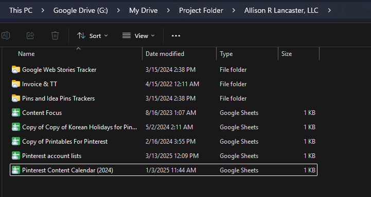
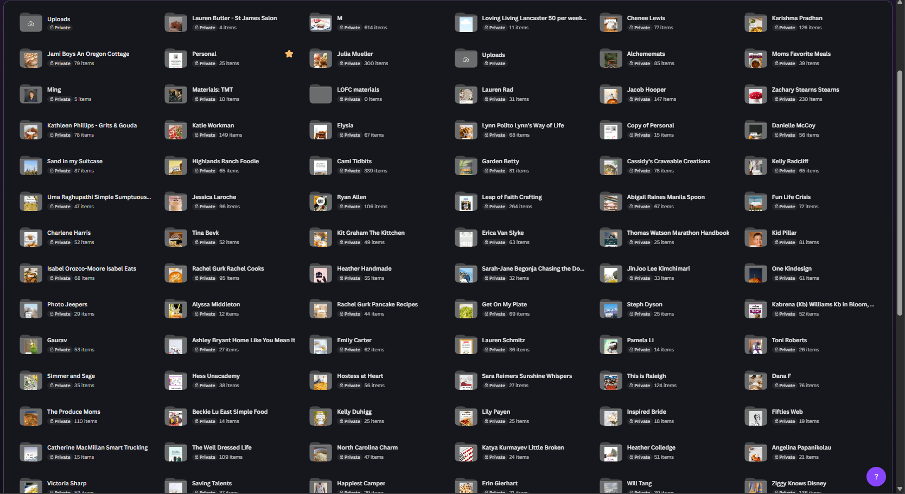
- Google Drive / Dropbox structured folder hierarchy
- Clear separation of source material, drafts, final exports
- Link sharing embedded directly in Trello when needed
- Prevents cross-account confusion at scale
Output documentation
An audit trail for every pin
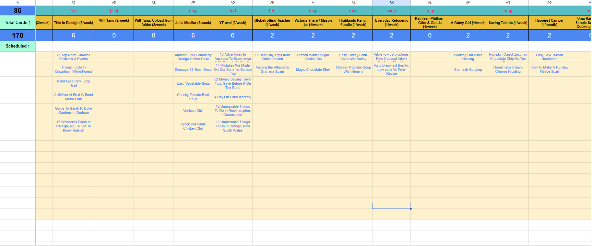
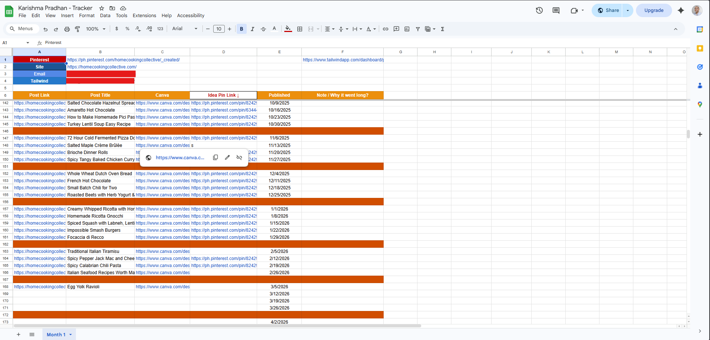
- Google Sheet log of completed pins
- Canva template link recorded
- Source blog URL recorded
- Published URL recorded
- Used for audit trail and invoicing documentation
Pinterest growth results
Steady, not spiky
Outcomes below reflect results supported by disciplined scheduling and structured workflow tracking.
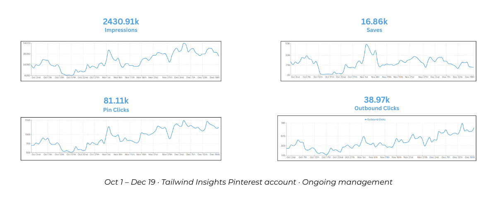
Managed on an ongoing basis (Oct 1–Dec 19), maintaining consistent publishing across multiple pinning cycles. Growth remained steady without sharp spikes or drops, supported by disciplined scheduling and fresh pin output.
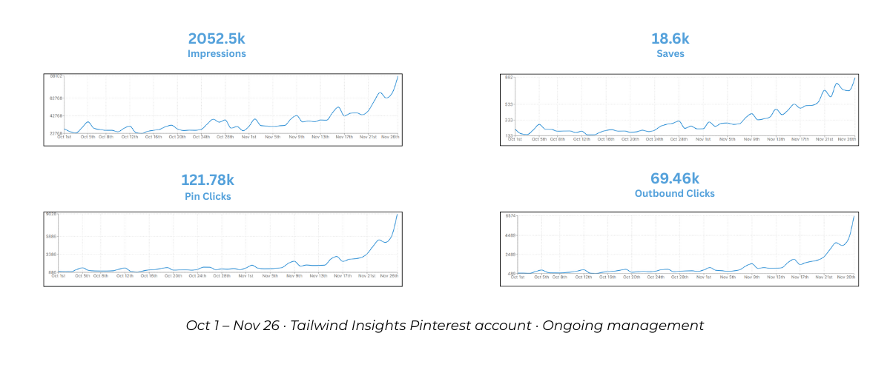
Ongoing management for the Tailwind Insights account (Oct 1–Nov 26). Performance remained steady with no major drops, supported by consistent publishing, structured scheduling, and disciplined pin output.
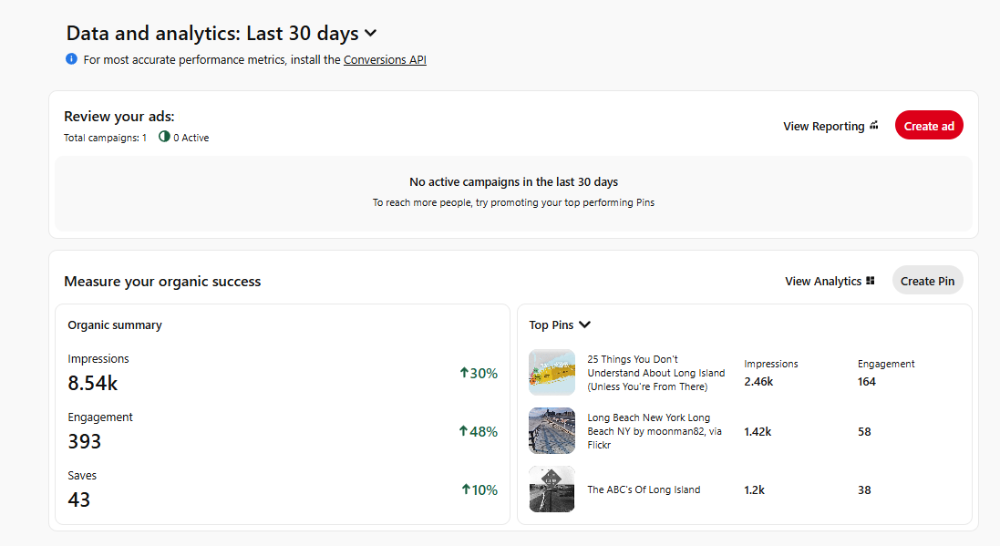
Snapshot from Pinterest's native dashboard for a travel account. Trend-aligned pin variations were created and published according to the client's content plan, maintaining consistent scheduling and platform alignment.
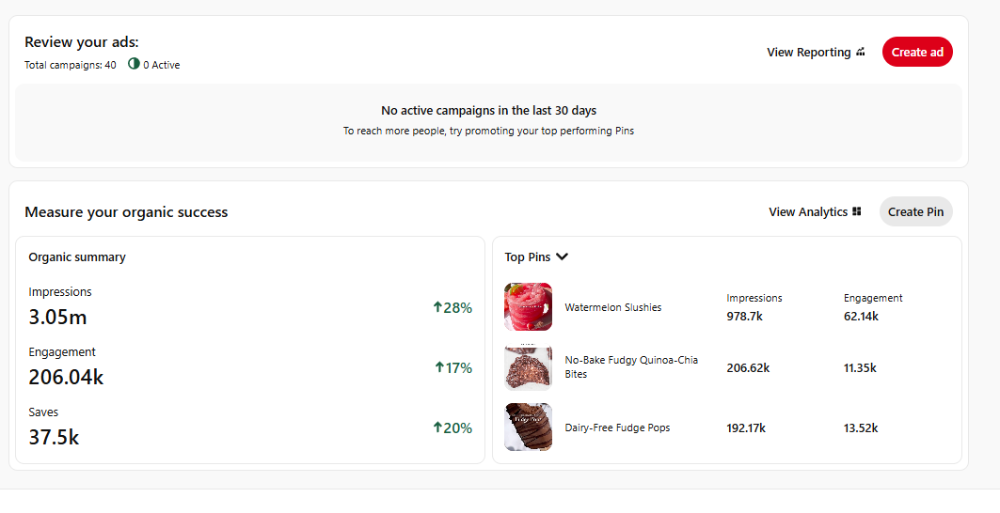
Snapshot from a food-recipe account managed over a 30-day period. Seasonal recipe content was produced and published consistently, with refreshed pin variations scheduled according to the client's content calendar.
Selected output
Format consistency at scale
High-volume publishing across multiple niches while maintaining format consistency and scalable output aligned with platform requirements.
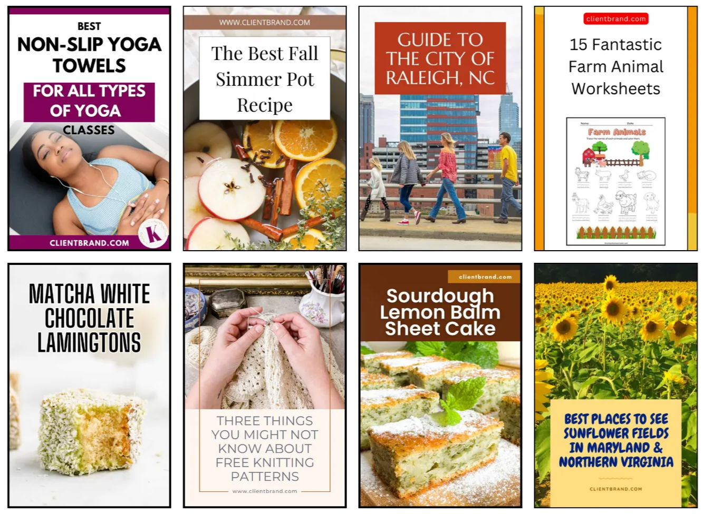
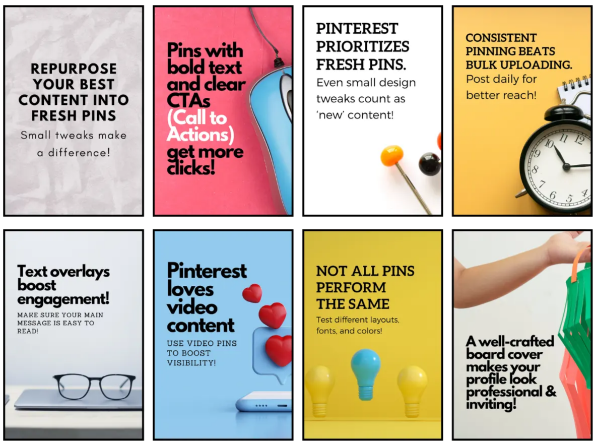
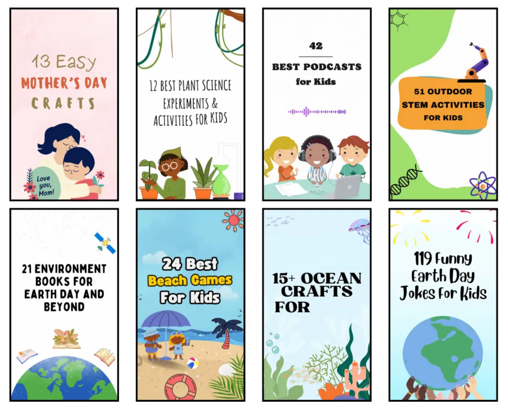
Next steps